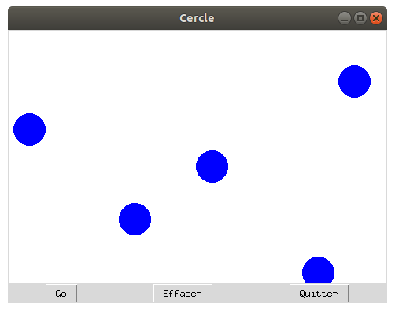

Les surfaces graphiques
Les Canvas sont des objets très utilisés sous Tkinter puisque ce sont en fait des surfaces sur lesquelles on peut dessiner ou disposer des images.
Le programme suivant dessine, à chaque clic sur le bouton Go, un disque de rayon 20 pixels à une position aléatoire :

Regardons sans plus attendre ce programme. Nous nous attarderons sur les aspects liés au Canvas car le reste est archi classique pour vous à présent.
import tkinter as tk
import random
# Constantes
LARGEUR = 480
HAUTEUR = 320
def dessine_cercle():
""" Dessine un cercle de centre (x,y) et de rayon r """
x = random.randint(0, LARGEUR)
y = random.randint(0, HAUTEUR)
r = 20
surface_dessin.create_oval(x-r, y-r, x+r, y+r, outline='blue', fill='blue')
def effacer():
""" Efface la zone graphique """
surface_dessin.delete(tk.ALL)
# Création de la fenêtre principale (main window)
mon_app = tk.Tk()
mon_app.title('Cercle')
# Création d'un widget Canvas (zone graphique)
surface_dessin = tk.Canvas(mon_app, width = LARGEUR, height = HAUTEUR, bg = 'white')
surface_dessin.grid(row=0, column=0, columnspan=3)
# Création d'un widget tk.Button (bouton Go)
bouton_go = tk.Button(mon_app, text ='Go', command = dessine_cercle)
bouton_go.grid(row=1, column=0)
# Création d'un widget tk.Button (bouton Effacer)
bouton_effacer = tk.Button(mon_app, text ='Effacer', command = effacer)
bouton_effacer.grid(row=1, column=1)
# Création d'un widget tk.Button (bouton Quitter)
bouton_quitter = tk.Button(mon_app, text ='Quitter', command = mon_app.destroy)
bouton_quitter.grid(row=1, column=2)
mon_app.mainloop()
Explications sur le Canvas
La nouveauté réside ici dans l’utilisation du widget Canvas. Celui-ci permet de dessiner sur un espace défini de la fenêtre des formes géométriques (cercles, droites, polygones), des images (cartes à jouer, ...) ou du texte.
Les méthodes à remarquer ici sont
-
create_oval()pour dessiner un cerclesurface_dessin.create_oval(x-r, y-r, x+r, y+r, outline='blue', fill='blue') -
delete(tk.ALL)pour supprimer tous les éléments sur la surface.
Les propriétés remarquables du canvas sont ici width et height qui désignent respectivement la largeur et la hauteur en pixels. Du
coup, la surface Canvas se crée de la manière suivante :
surface_dessin = tk.Canvas(mon_app, width = LARGEUR, height = HAUTEUR, bg = 'white')
Les coordonnées sur la surface s’expriment en pixels. Le (0,0) se trouve en haut à gauche. On remarquera que l’axe des ordonnées est donc tourné vers le bas. C'est le sens de lecture naturel d'un écran.